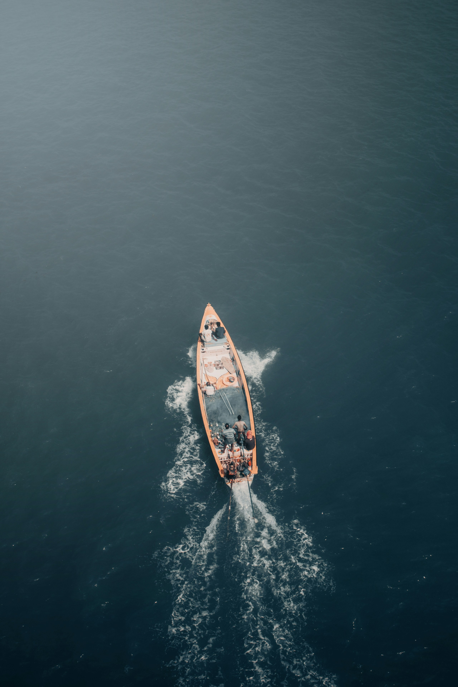
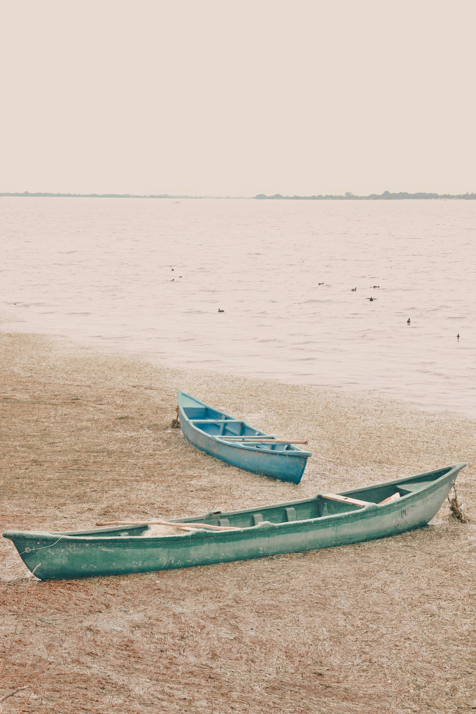
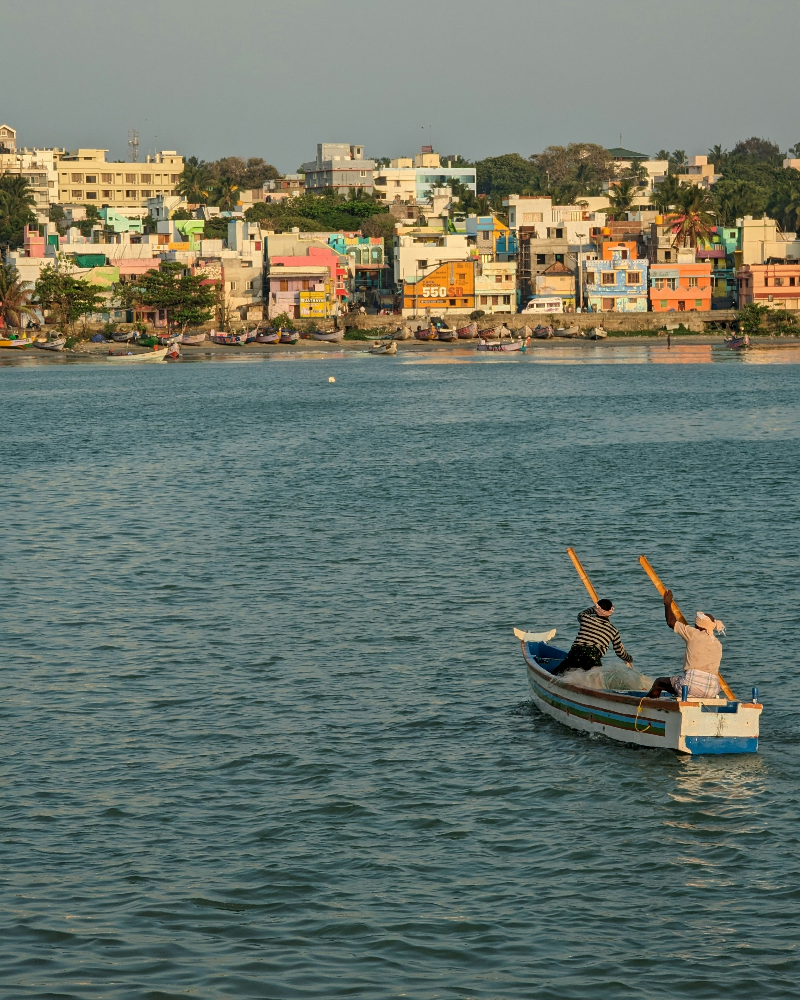
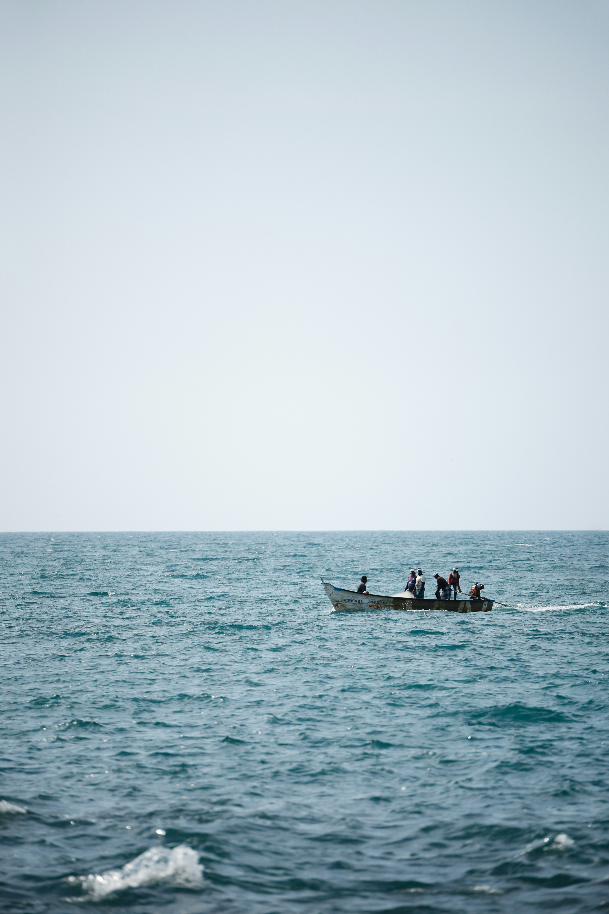
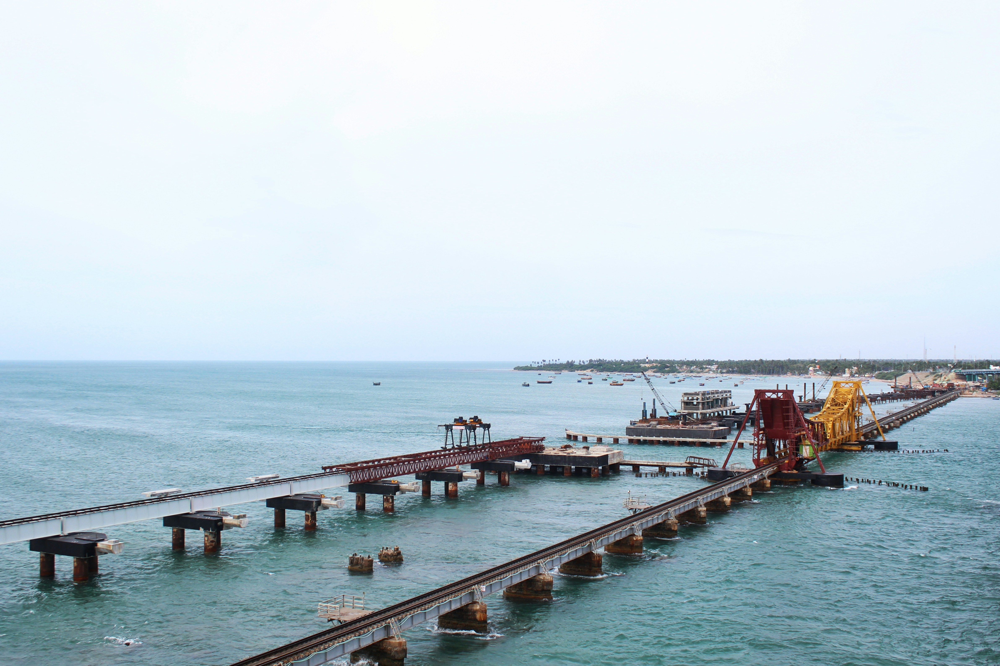
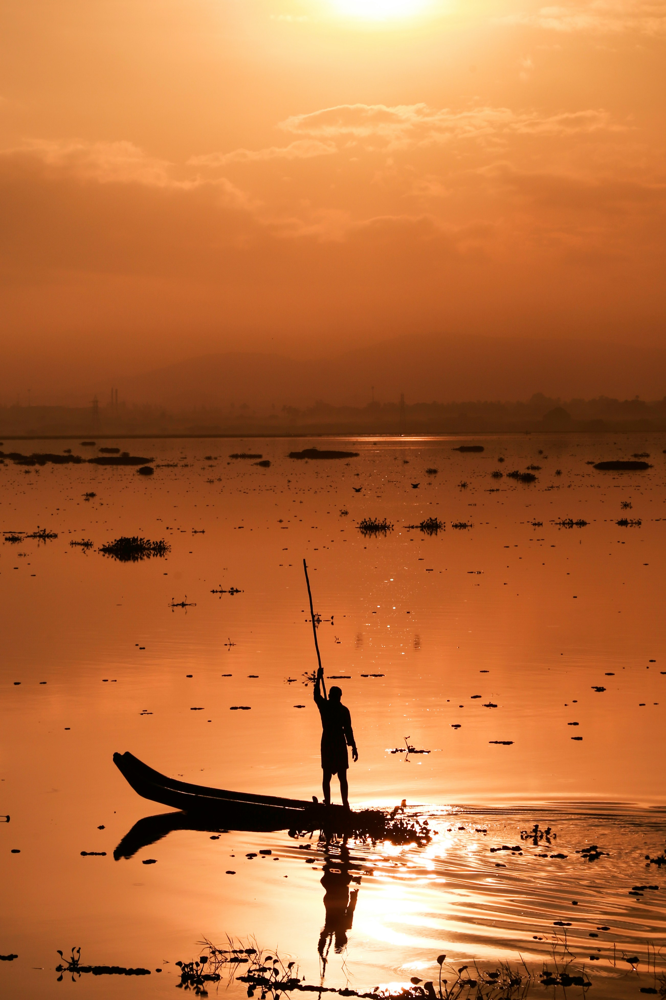
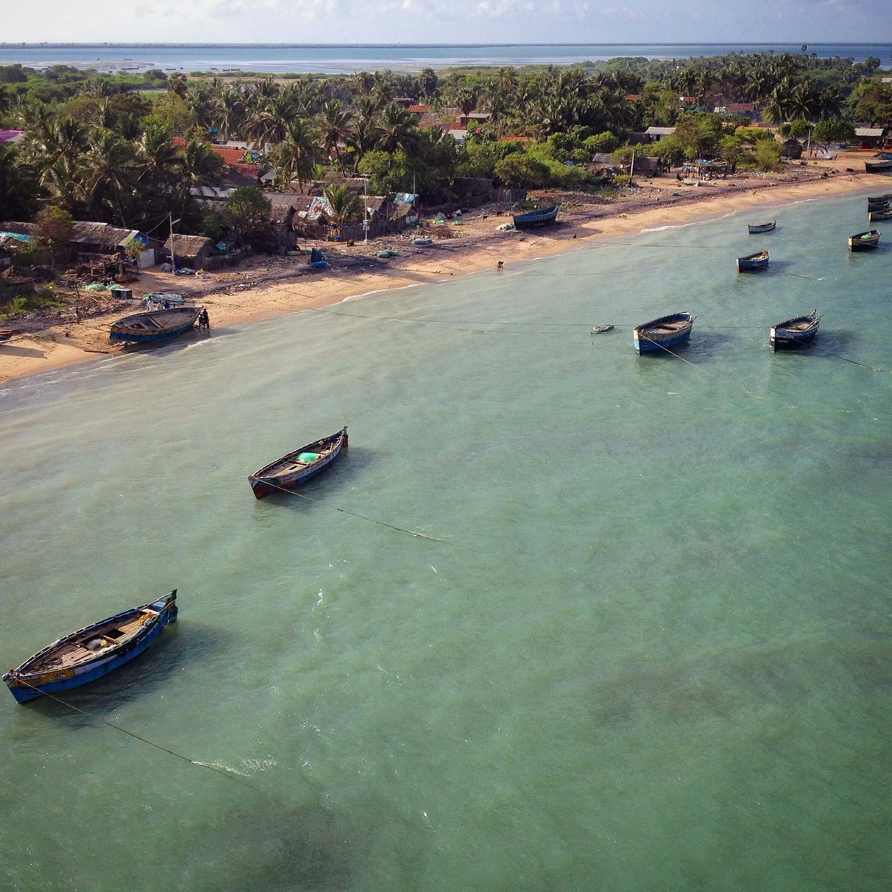
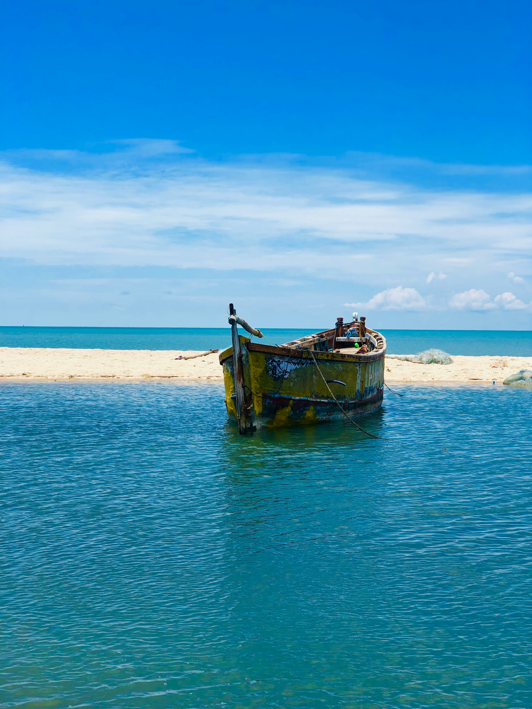
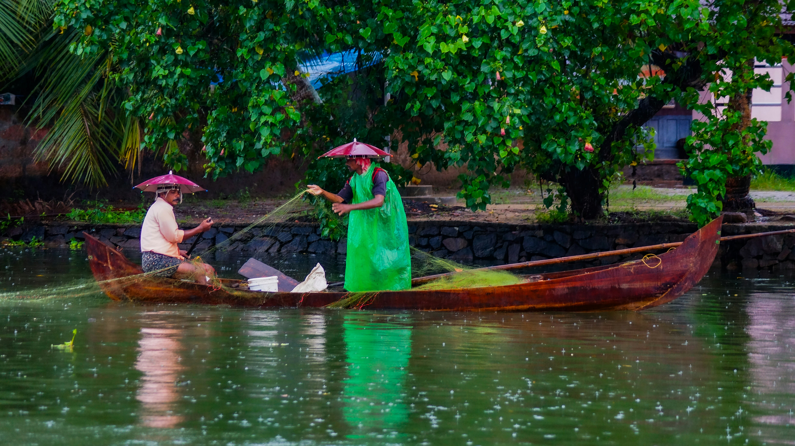

There’s something magical about snorkeling that captures my heart every time I dive beneath the surface. The feeling of weightlessness as I glide through the water, surrounded by vibrant coral reefs and schools of colorful fish, is nothing short of mesmerizing. Snorkeling lets me experience a hidden world brimming with life, from the gentle sway of sea anemones to the graceful movements of sea turtles. I love the quiet hum of the ocean in my ears, a peaceful reminder of how vast and beautiful the underwater world truly is. It’s a hobby that fuels my sense of wonder and adventure, teaching me to appreciate the delicate balance of marine ecosystems while creating unforgettable memories with every dive. Whether I’m exploring shallow lagoons or spotting curious dolphins in the distance, snorkeling always leaves me feeling connected to nature and deeply inspired by the beauty of the sea.
Hello there, I'm Frances
Welcome to my world of exploration and creativity. I’m passionate about discovering the wonders of the sea, whether it’s snorkeling in crystal-clear waters, collecting unique seashells along the shore, or capturing breathtaking sunsets by the ocean. The sound of the waves inspires me, and I find joy in exploring marine life and sharing stories of my adventures. Let’s dive in and embrace the magic of the sea together!
My Favorite Sea Side Hobby: Snorkeling
The Serenity of the sea









